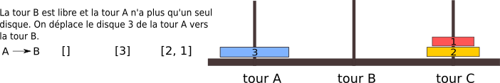

Récursivité#
Les tours de Hanoï#
En étudiant la résolution du casse-tête des tours de Hanoï, on peut remarquer des similitudes dans les transferts.
Pour expliquer et découvrir ces similitudes, on schématise les tours par des listes et les disques par des nombres entiers.
Commençons par le cas le plus simple avec n=2 disques :#
Passons maintenant à 3 disques:#
On va dans un premier temps déplacer les disques 1 et 2 de la tour A vers la tour C. On applique le même processus que pour n=2 disques.
Les disques 1 et 2 déplacés sur la tour C, il devient possible de déplacer le disque 3 vers la tour B:

L’étape suivante consiste à libérer la tour C pour insérer le disque 3.
Pour replacer les deux disques de la tour C sur la tour A, c’est comme le transfert de la tour A vers la tour C mais en échangeant A par C et C par A.
La tour C libérée, on déplace le disque 3 de la tour B vers la tour C.
Dernière étape, replacer les disques 1 et 2 sur la tour C en reprenant le processus de déplacement des deux disques.
On finit avec 4 disques#
Le déplacement de trois disques de la tour A vers la tour C constitue un processus à part entière. Avec 4 disques: - on cherchera d’abord à déplacer les trois disques supérieurs de la tour A sur la tour C; - on déplacera le disque 4 de la tour A vers la tour B; - on déplacera les trois disques 1,2 et de la tour C vers la tour A; - on déplacera le disque 4 de la tour B vers la tour C; - on déplacera les trois disques 1, 2 et 3 de la tour A vers la tour C.
Cet algorithme vaut pour 4 disques et plus. Le principe repose sur le fait qu’on déporte la résolution vers un cas comportant un disque de moins et ainsi de suite jusqu’au cas de base avec n=2 disques. Chaque disque supplémentaire est lié au cas qui comporte un disque de moins. En mathématiques, on appelle cela une relation de récurrence, en informatique, on dit que c’est un algorithme récursif.
Supposons que la résolution du casse tête se réalise avec une fonction tour_hanoi. Elle prend en argument le nombre de disques et les piles A, B et C correspondant à l’état des tours.
Elle se structurera ainsi:
def tour_hanoi(n,p1,p2,p3):
if n == 2:
# on résout le cas de base avec les transferts utiles pour 2 disques
else:
... # premier appel récursif
... # A --> B (le plus grand disque passe en tour B)
... # appel récursif en interchangeant A et C
... # B --> C (le plus grand disque passe en tour C)
... # dernier appel récursif
L’appel de la fonction se fait avec n=4 et les les 3 piles de disques A, B et C.
Cette fonction va donc appeler la même fonction tour_hanoi avec cette fois-ci n=3 disques et les piles A, B et C. Tant que la fonction appelée avec n=3 n’a pas fini, la fonction appelante (n=4) se met en pause.
Cette fonction va appeler la fonction tour_hanoi avec n=2 disques et les 3 piles A, B et C.
Pour n=2, on effectue les transfert de disques. La fonction ayant terminé, la fonction appelante (n=3) reprend son cours et poursuit la résoltion. Lorsqu’elle aura finit, c’est la fonction appelante avec n=4 qui reprendra son cours normal.
Résolution récursive du casse-tête#
Dans une fonction récursive, on retiendra: - que la fonction s’appelle elle-même pour résoudre un problème, une situation avec une valeur différente; - que la fonction contient un cas qui permet d’arrêter les appels : c’est le cas de base; - que la fonction reprend son cours, effectue les instructions situés après l’appel récursif; - enfin, la fonction peut contenir plusieurs appels récursifs.
Les différents appels récursifs qui sont mis en pause, sont en fait contenus dans une pile.
[8]:
def dessus(L):
if len(L) > 0:
return L[len(L)-1]
else:
return n+1
def transfert(L1,L2):
d1 = dessus(L1)
d2 = dessus(L2)
if d1 <= n or d2 <= n:
if d1 < d2:
L1.pop(len(L1)-1)
L2.append(d1)
else:
L2.pop(len(L2)-1)
L1.append(d2)
n=4
pileA = [n-i for i in range(n)]
pileB = []
pileC = []
print(pileA,pileB,pileC)
e=0
def tour_hanoi(n,p1,p2,p3):
global e
if n == 2:
transfert(p1,p2)
#print(pileA,pileB,pileC)
transfert(p1,p3)
#print(pileA,pileB,pileC)
transfert(p2,p3)
#print(pileA,pileB,pileC)
e += 3
else:
tour_hanoi(n-1,p1,p2,p3)
transfert(p1,p2)
e+=1
#print(pileA,pileB,pileC)
tour_hanoi(n-1,p3,p2,p1)
transfert(p2,p3)
e+=1
#print(pileA,pileB,pileC)
tour_hanoi(n-1,p1,p2,p3)
tour_hanoi(n,pileA,pileB,pileC)
print(pileA,pileB,pileC)
print(e)
[4, 3, 2, 1] [] []
[] [] [4, 3, 2, 1]
35
[14]:
from pile import *
def dessus(pile):
"""
cette fonction renvoie la valeur du disque du dessus de la pile si non vide
sinon renvoie une valeur plus grande que tous les disques
"""
if not pile.est_vide():
x=pile.depiler()
pile.empiler(x)
return x
else:
return n+1
def transfert(p1,p2):
"""
cette fonction passe un disque d'une pile vers une autre pile
"""
d1 = dessus(p1)
d2 = dessus(p2)
if d1 <= n or d2 <= n:
if d1 < d2:
p1.depiler()
p2.empiler(d1)
else:
p2.depiler()
p1.empiler(d2)
n = 4
pileA = creer_pile()
pileB = creer_pile()
pileC = creer_pile()
for i in range(n):
pileA.empiler(n-i)
print("pile A:",pileA)
print("pile B:",pileB)
print("pile C:",pileC)
print()
def tour_hanoi(n,p1,p2,p3):
if n == 2:
transfert(p1,p2) # A --> B
transfert(p1,p3) # A --> C
transfert(p2,p3)
else:
tour_hanoi(n-1,p1,p2,p3) # premier appel récursif
transfert(p1,p2) # A --> B (le plus grand disque passe en tour B)
tour_hanoi(n-1,p3,p2,p1) # appel récursif en interchangeant A et C
transfert(p2,p3) # B --> C (le plus grand disque passe en tour C)
tour_hanoi(n-1,p1,p2,p3) # dernier appel récursif
tour_hanoi(n,pileA,pileB,pileC)
print(pileA,pileB,pileC)
pile A: |4|3|2|1|
pile B: |
pile C: |
Cas n=2
A: |4|3|2| B: |1| C: |
A: |4|3| B: |1| C: |2|
A: |4|3| B: | C: |2|1|
A --> B
Cas n=2
A: |4| B: |3|1| C: |2|
A: |4|2| B: |3|1| C: |
A: |4|2|1| B: |3| C: |
B --> C
Cas n=2
A: |4|2| B: |1| C: |3|
A: |4| B: |1| C: |3|2|
A: |4| B: | C: |3|2|1|
A --> B
Cas n=2
A: | B: |4|1| C: |3|2|
A: |2| B: |4|1| C: |3|
A: |2|1| B: |4| C: |3|
A --> B
Cas n=2
A: |2| B: |4|3|1| C: |
A: | B: |4|3|1| C: |2|
A: | B: |4|3| C: |2|1|
B --> C
Cas n=2
A: |3| B: |4|1| C: |2|
A: |3|2| B: |4|1| C: |
A: |3|2|1| B: |4| C: |
B --> C
Cas n=2
A: |3|2| B: |1| C: |4|
A: |3| B: |1| C: |4|2|
A: |3| B: | C: |4|2|1|
A --> B
Cas n=2
A: | B: |3|1| C: |4|2|
A: |2| B: |3|1| C: |4|
A: |2|1| B: |3| C: |4|
B --> C
Cas n=2
A: |2| B: |1| C: |4|3|
A: | B: |1| C: |4|3|2|
A: | B: | C: |4|3|2|1|
| | |4|3|2|1|
[ ]: